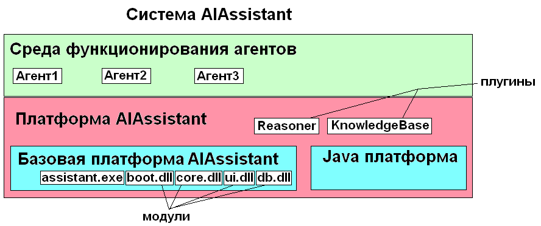

Рис. 2. Структурная схема системы AIAssistant.
Источник: http://www.aiwinsoft.com/aiassistant/development/description/AIAssistant-Main.PNG

Платформенная схема системы AIAssistant
Рассмотрим систему AIAssistant снизу вверх.
Базовая платформа состоит из стартового файла assistant.exe и набора модулей в виде DLL библиотек. Задача assistant.exe: передавать бинарные сообщения между модулями системы; содержать в себе список загруженных модулей; предоставлять базовые функции по присоединению, инициализации, запуска, остановки, финализации и выгрузке моделей; запустить модуль boot.dll с указанием определенной конфигурации.
В системе предполагается наличие следующих модулей:
boot.dll - загрузчик. Задача загрузчика: прочитать XML файл конфигурации и инициализировать необходимые модули.
core.dll - микроядро. Задача микроядра: передавать FIPA-ACL сообщения между всеми частями системы (модулями, плугинами и агентами);
хранить список загруженных частей системы.
ui.dll - интерфейс пользователя (предполагается графический интерфейс пользователя). Окно управления сделанное возможно в стиле Eclipse.
db.dll - модуль работы с хранилищем данных. Предполагается работа со всеми данными система будет осуществлять через этот модуль.
Модуль DB возможно будет создан по образу BerkelayDB.
runtime.dll - модуль предоставления виртуальной среды для функционирования плугинов.
Предполагается, что этот модуль будет создавать JavaRuntime и JavaVM и предоставлять методы доступа к функциям модулей и операционной системы через JNI.
Платформа состоит из базовой платформы AIAssistant, платформы Java (JavaVM и JavaRuntime) и набора плугинов. Плугин - это объектно-ориентированная часть системы. Плугины служат для предоставления инструментов для функционирования агентов. Предположительно плугины будут реализовываться на Java. В системе предполагается создать следующие плугины:
Reasoner - машина логического вывода;
KnowledgeBase - база знаний;
AilInterpretator - интерпретатор выполняемого кода агентов;
AilRuntime - среда функционирования агентов.
Система AIAssistant состоит из платформы, среды выполнения агентов, которую реализует платформа AIAssistant. В систему AIAssistant входят текущие загруженные и выполняемые агенты. Агенты оперируют знаниями в виде онтологий (OWL). Выполняемый код агентов предполагается писать на языке AIL. Предполагается, что при работе агенты активно используют машину логического вывода, базу знаний и другие плугины системы AIAssistant, но не могут напрямую обращаться к модулям базовой платформы или функциям операционной системы. Если в реализации агента требуется выполнять внешние действия то это осуществляется через ”умения”.
AIAssistant является платформой для AI приложений. Система AIAssistant является платформой для работы приложений и агентов.
Механизм обмена сообщениями. В программе AIAssistant заложен механизм обмена сообщениями между агентами, между агентами и приложениями (клиентами). Приложения (клиенты) являются GUI программы. Агенты – аналоги служб в Windows. Принципиальным отличием агентов от служб Windows является то, что агенты обмениваются данными в виде FIPA-ACL сообщений. Все сообщения между агентами, клиентами (GUI) и базой знаний передаются в виде FIPA-ACL сообщений (http://www.fipa.org/).
База знаний. Программа AIAssistant обеспечивает работу базы знаний. База знаний – это распределенная база данных сущностей. Это означает, что данные, помимо локальной БД при необходимости могут запрашиваться из внешних хранилищ. Программа AIAssistant обеспечивает первичную подготовку и преобразование основных типов данных (из сущности в объекты). К основным типам данных относятся все OWL элементы: классы, индивиды, а также связи элементов. Для различных приложений системы AIAssistant список основных типов данных может быть расширен. Например для AIAssistant.Organizer основными типами данных будут являться классы и объекты: Задание, Заметка, Напоминание и др.
Машина логического вывода. Система AIAssistant содержит в себе машину логического вывода (Reasoner), которая может делать логические заключения используя элементы онтологии (OWL DL элементы). Т.е. фактически система AIAssistant является экспертной системой.
Рис. 2. Структурная схема системы AIAssistant.
Источник: http://www.aiwinsoft.com/aiassistant/development/description/AIAssistant-Main.PNG
Система AIAssistant состоит из двух основных частей:
1) Ядро системы (AIKernel) и
2) клиентской части (GUI).
В данный момент обе эти части компилируются в одно Windows-приложение (07.2007).
Система AIAssistant будет состоять из шести частей:
AIAssistant Core - Ядро системы. Главная часть системы.
AIAssistant KnowlegeBase - хранилище знаний.
AIAssistant Studio - программа, реализующая функции программирования агентов системы AIAssistant. Может работать и без хранилища знаний, используя другие источники данных.
AIAssistant Viewer - программа, ориентированная на конечного пользователя и предназначенная для просмотра подготовленных при помощи AIAssistant Studio отчетов (форм). AIAssistant Viewer позволяет минимизировать требования к пользователю системы, т.к. все необходимые операции выполняются автоматически при помощи подготовленных ранее сценариев обработки. Пользователю AIAssistant Viewer необходимо только выбрать и настроить вариант отображения полученных результатов.
AIAssistant Server – служба, обеспечивающая удаленную обработку данных и предоставляет доступ к хранилищу знаний. Позволяет автоматически обрабатывать данные и переобучать модели на сервере, оптимизирует выполнение сценариев за счет кэширования проектов и использования многопоточной обработки.
AIAssistant Client – клиент доступа к AIAssistant Server. Обеспечивает доступ к серверу из сторонних приложений и управление его работой.
История
Я начитался информации про Eclipse, Minix3 и другие модульные системы и пришел к выводу, что система AIAssistant должна состоять из отдельных модулей (DLL), плугинов и компонент.
Какие именно модули, плугины и компоненты будут загружаться сразу, какие будут доступны, какие недоступны будет определяться конфигурацией и индивидуальными настройками.
Что я понимаю под модулями, плугинами и компонентами. Терминология: модуль - это платформозависимая часть системы, выполняется в виде DLL библиотеки, совокупность модулей создает базовую платформу AIAssistant. плугины - это платформонезависимые (Java) части системы, совокупность модулей и плугинов создает платформу AIAssistant для работы агентов. компоненты - это части системы, которые используют для своей работы плугины и модули, компоненты должны быть написаны на универсальном языке AIL (AI Language).
Модули, необходимые для построения базовой платформы: core - микроядро для передачи FIPA-ACL сообщений между плугинами и компонентами; ui (User Interface) - графический интерфейс пользователя; db (Data Base) - доступ к хранилищу данных; и другие модули, которые будут выполнять определенные функции.
Какие другие модули? Возможно DLL для связи локальных копий AIAssistant по TCP/IP и другие. Плугины, необходимые для построения платформы: reasoner - машина логического вывода и другие необходимые плугины.
Eclipse по похожей структуре организована. Плугины там все написаны на Java. Расширяемая гибкая система. Причем подключая различные плугины можно создать огромную многофункциональную систему. Кстати помоему Oracle по такому же принципу сделано.
В итоге получается что программа aiassistant.exe не будет содержать практически ничего в себе. И благодара такому подходу можно на основе одного стартового файла с различными подгружаемыми модулями получить различные варианты. Система получается очень гибкая - на любой вкус и цвет. Модули могут быть написаны на C++, Delphi или другом языке. Таким образом можно найти базовую отправную точку для всех заинтересованных в ИИ, но с различными подходами.
Я понимаю агента как аналог службы в Windows или демона в BSD - т.е. как некую часть системы, которая функционирует постоянно и выполняет вполне определенные функции. Например агент сортировки новых поступивших данных или агент индексирования или агент-поисковый робот по документам на локальном компьютере.
Плугины и компоненты
Плугины - это мини- приложение, выполняющее специфическую работу в общей системе.
Компоненты - это намного более высокоорганизованный код по сравнению с машинным и даже по сравнению с Java. (я кстати рассмотрел множество различных языков. Наилучший существующий вариант - это Java. Еще мне понравился Smaltalk.). Это я имею в виду язык описания последовательности действий. А представление данных для обработки (знаний) будет в виде онтологий (OWL). Т.е. компоненты в AIAssistant - это более высокоорганизованная информация, чем плугины (скомпилированный с какого-либо языка машинный код), подлежащий к безоговорочному исполнению.
Компоненты в AIAssistant - это база для выполнения умений. Умения - это технологии производства некоторых работ, передаваемых в виде знаний (OWL). А демоны в AIAssistant уже для использования этих знаний могут создавать целые группы демонов - социум для выполнения конкретной работы по этой технологии. Системные демоны могут создавать один или более прикладных демонов для этого
Виды агентов
Как и процессы в Винде, возможно агенты должны быть системными и пользовательскими.
Фактически, отличие от предыдущего взгляда в том, что введена еще одна прослойка между железом и агентами - платформа AIAssistant. Эту прослойку можно реализовывать на Java.
Почему на Java? - Это связано с тем, что практически все открытые проекты ИИ-направленности написаны на Java (и Smaltalk) - это действительно платформа для ООП, а все остальные платформы для программирования это бинарный код.
В Java очень многого из нужного для реализации агентов нет, поэтому решено создавать новый язык программирования для компонентов и агентов в AIAssistant. Предполагается назвать этот язык AIL (AI Language).
Как он будет выглядеть - сейчас сказать трудно, но базовые понятия “пространство имен”, классы, объекты, свойства и методы объектов скорее всего будут присутствовать.
На языке AIL будут записываться умения (в составе компонент). AIL предназначен для реализации Субъектно-ориентированного программирования (СОП).
Еще выше уровнем находится Парадигма Субъектного Общения.
Модуль boot.dll
Загрузчик модулей из программы (aiassistant.exe) вынесен в отдельную библиотеку (boot.dll). Таким образом вся задача программы aiassistant.exe будет заключаться в выполнении следующих действий по просьбе модулей:
Открыть модуль (DLL), зачитать информацию о модуле.
Инициализировать модуль (вызвать функцию Модуль.InitModule).
Старт выполнения модуля (если в модуле реализован отдельный подпроцесс) (вызвать функцию Модуль.RunModule)
Остановить модуль (Module.TerminateModule).
Финализировать модуль (Module.FinalizeModule)
Передать бинарное сообщение от одного модуля другому модулю (Module.AddMessage)
Бинарное сообщение должно содержать:
Sender - локальный ID отправителя
Receiver - локальный ID получателя
Cmd - код сообщения/команды
Params - параметры (значение Int32 или указатель на область памяти со структурой данных параметров)
Дополнительная информация по платформам:
www.eclipse.org (Eclipse)
www.netbeans.org (NetBeans)
© Prof1983 2007-2011
29.07.2007-21.04.2011